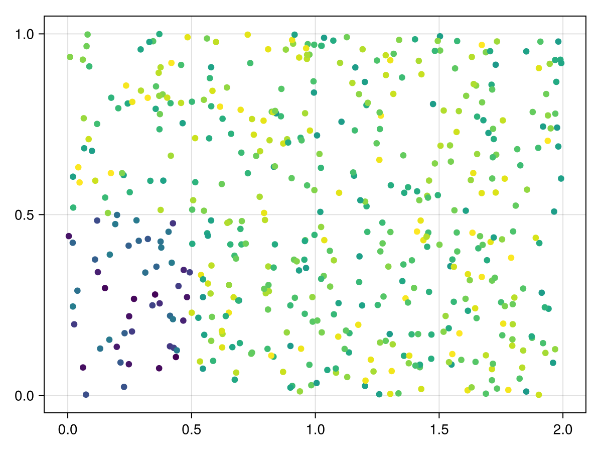
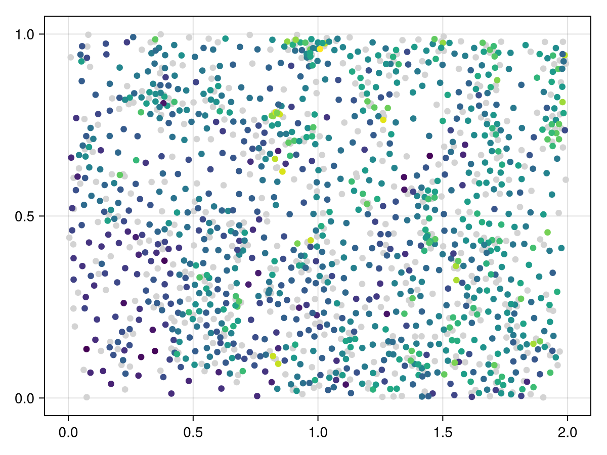
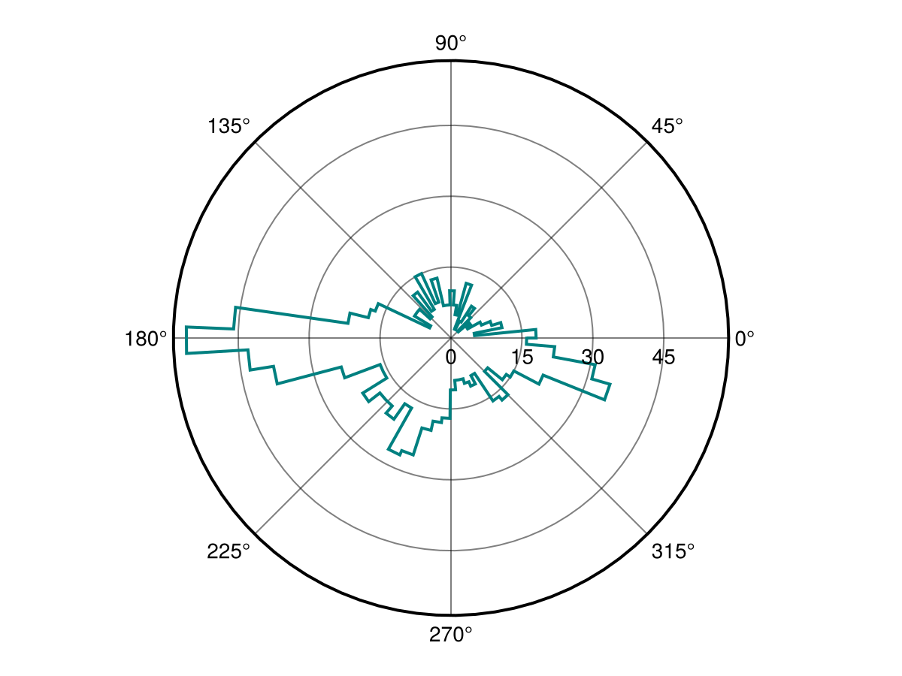
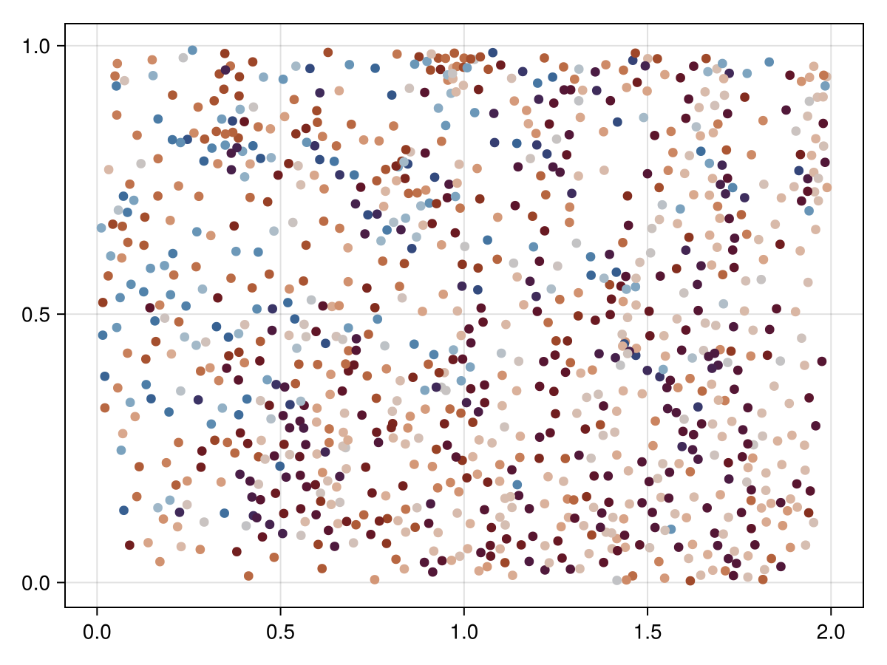

Triangulation wombling
using SpatialBoundaries
using CairoMakie
using StatsBaseGet some points at random
n = 500
x = 2rand(n)
y = rand(n)
z = [(x[i] <= 0.5) & (y[i] <= 0.5) ? rand() : rand() .+ 1.2 for i in eachindex(x)]
scatter(x, y; color = z)
Womble
W = wombling(x, y, z)TriangulationWomble{Float64}([8.843394050027587, 35.447946130413385, 9.566512768793665, 7.6156654718835615, 17.83898369477564, 3.7948627566008075, 1.056886058635143, 1.9420715097181198, 8.044502129422186, 4.866486146282502 … 60.948903601717845, 4.516377110087346, 14.861474653983331, 7.3005176568911905, 7.655375002259523, 13.78823704490787, 8.889635274970514, 25.769956236528852, 12.065751113491135, 9.220805145700819], [198.16221486802462, 5.220587557393429, 200.52291375620882, 168.84166678400646, 186.68878794124112, 230.84953665888563, 285.04661058827844, 233.13287805107691, 155.38265453505764, 139.03838989395786 … 143.7043234579819, 281.12591842259576, 196.50256697766997, 187.5753357121273, 189.22449893638503, 206.40494342626937, 236.90126893262342, 18.73440285608396, 250.5997675553386, 118.59835138873646], [1.2845569237439622, 1.9365999871854644, 1.8364419836055683, 1.9043933576927927, 1.8027557750842746, 0.9629332794084338, 0.9950800728058015, 0.33165249146188414, 1.1015567771532535, 0.9644151730548529 … 0.8363106754954446, 0.8415267955636545, 1.958347646062806, 1.978467014225972, 1.3116264693755701, 1.3166988292807238, 1.6910438111260586, 1.712506970036794, 0.34966315746046583, 0.33977891215644135], [0.12137141366372688, 0.7521552050713965, 0.14740504345022978, 0.840871693688897, 0.6389020550815987, 0.1862250511311876, 0.22756625545547568, 0.37613420775899636, 0.4271158457600486, 0.9112620238570798 … 0.7834278010225914, 0.8063638152017584, 0.8267158669761251, 0.9046268253440939, 0.7571827942346202, 0.8664002496486262, 0.7007576398115587, 0.7240069012700815, 0.8354454173487834, 0.8632660855776866])Get the rate of change
scatter(x, y; color = :lightgrey)
scatter!(W.x, W.y; color = log1p.(W.m))
current_figure()
Angle histogram
f = Figure()
ax = PolarAxis(f[1, 1])
h = fit(Histogram, deg2rad.(values(W.θ)); nbins = 100)
stairs!(ax, h.edges[1], h.weights[[axes(h.weights, 1)..., 1]]; color = :teal, linewidth = 2)
current_figure()
Show the rotation with a color
scatter(W.x, W.y; color = W.θ, colormap = :vikO, colorrange = (0, 360))